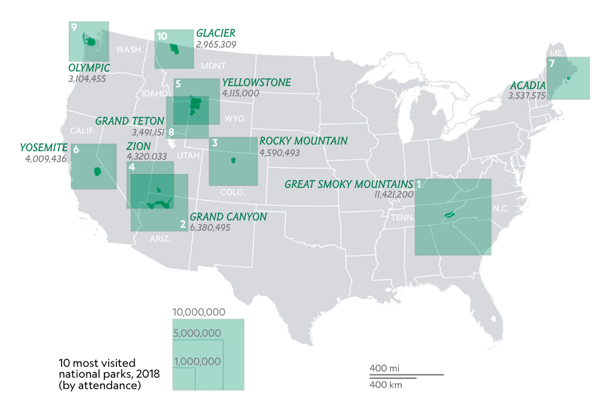

About National Parks Kiosk
This website allows you to search the National Parks Service public database using park name, key words, as well as
state
(abbreviations)
and
park designation
filters.
Search results default to no more than 50 results. Check
"View All Results" and click Update Search to see all parks that match your search criteria.
Most Visited Parks

{% endblock %}